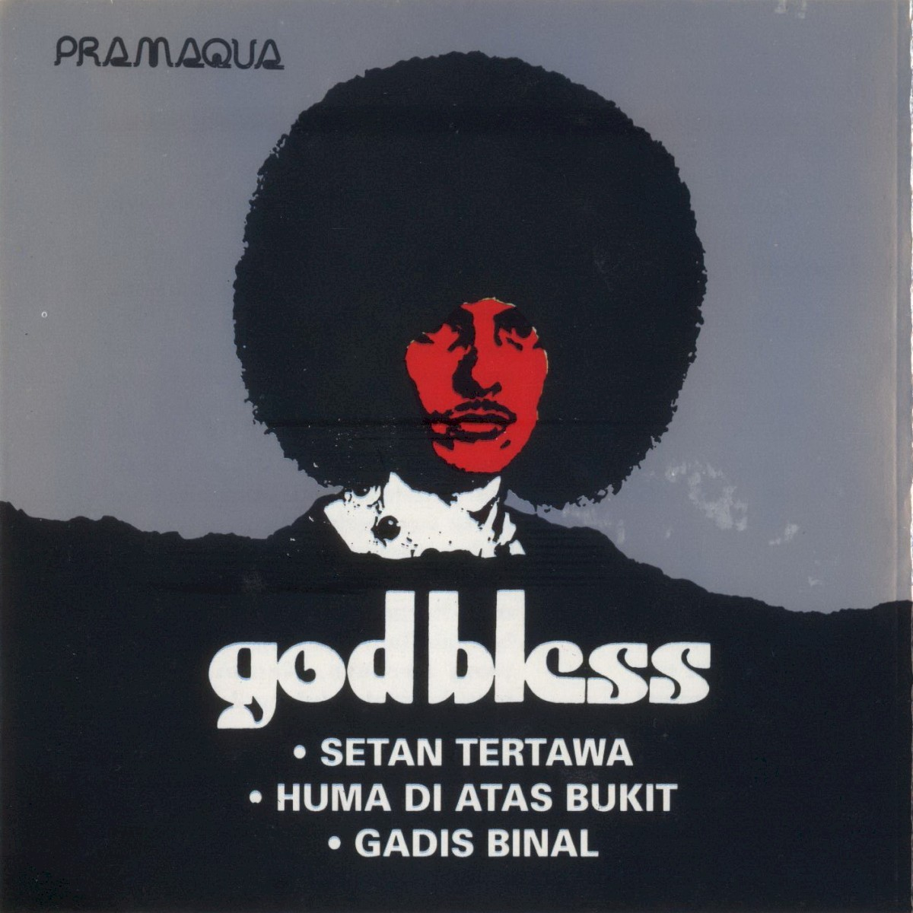

Ahmad Albar 出生于东爪哇的阿拉伯裔家庭，小时候演过电影[3]。约一九六〇年前后他去了荷兰，先在 Take Five 拿过音乐节最佳歌手，一九六七至一九七二年在乐队 Clover Leaf 唱了九年，发过九张单曲，其中〈Don't Spoil My Day〉〈Grey Clouds〉在荷兰小有名气[3]。
一九七二年底，他带着 Clover Leaf 的荷兰吉他手 Ludwig Lemans 回到雅加达，拉上鼓手 Fuad Hassan、贝斯手 Donny Fattah，在 Puncak 闭关排练两周，准备一九七三年五月在伊斯迈尔·马尔祖基公园的演出——排练期间，乐队定名 God Bless[3][1]。
[图2] Ahmad Albar 童年照。公有领域，取自 Wikimedia Commons（原件见 dennysakrie63.wordpress.com）。
2009《36th》——Albar 出狱后的复归之作；同年末乐队登上 Rolling Stone Indonesia 封面[1][2]
2023《Anthology 50th Year Anniversary》——与吉他手 Tohpati 及捷克交响乐团合作，纪念成军五十年[11]
《Semut Hitam》的词作者名单里有一个后来更响的名字：Iwan Fals——印尼最具代表性的民谣抗议歌手，为这张专辑写了〈Damai Yang Hilang〉（失落和平）〈Orang Dalam Kaca〉（镜中人）〈Trauma〉三首词[6]。英文维基引《雅加达邮报》的评论：God Bless 的歌常为穷人与工人阶级发声[1]。

[图5] 《God Bless》（1975）首专封面。取自 Cover Art Archive（MusicBrainz），版权归原权利人。
一九八七年，词作者 Theodore KS——印尼音乐圈最有名的乐评人之一，后来写了 Albar 的传记《Achmad Albar, Sang Ikon》[1]——想要一栋自己的房子。据二〇二〇年翻唱项目的报道转述，哪怕它小一点、破一点、位置偏一点，只要是自己的就好。他把写好的歌词交给了 God Bless 的吉他手 Ian Antono；而这位吉他手当时正在参与《Semut Hitam》的录音——他住的地方，还是租来的[9]。
音乐上，它是一首慢摇滚（slow rock）叙事曲：旋律线简单到一听就能跟唱，与专辑其余的硬摇滚曲目形成落差——ProgArchives 的乐评称它「旋律抓耳、流动平滑」，并认为歌词「讲的是无论外面的世界怎么发展，人应当留在自己的土地」[7]。它不是《Semut Hitam》里最先红的歌（〈Kehidupan〉先爆），但传唱得更久——主唱 Albar 二〇一一年在 Hard Rock Cafe 的演出现场对观众说：「这是一首关于城市化的歌。那晚全场跟着他唱完了整首歌」——《雅加达邮报》这样记录[8]。
它至今仍是各类「家／国家」主题的电视节目配乐，也常被翻唱：二〇二〇年独立日前，Lesti、Melly Goeslaw 等人把它重录成极简钢琴版，制作人是 Anto Hoed 与 Melly Goeslaw[9]。在 Rolling Stone Indonesia 二〇〇九年的「一百五十首史上最好的印尼歌曲」里，〈Kehidupan〉排第八，〈Rumah Kita〉排第二十二[15]。二〇二五年六月五日，世界杯预选赛印尼对中国队，开球前，主教练 Kluivert 亲自打电话请乐队到场——他们唱的正是这首[10]。
「本页选择，非榜单结论」——God Bless 没有一份权威「最经典一首」榜单；本页选〈Rumah Kita〉依据：Rolling Stone Indonesia 150 大第 22 名（乐队两首上榜之一）＋ 2025 年国家体育场开球曲 ＋ 长期被翻唱与电视引用。〈Kehidupan〉排名更高（第 8），同样值得先听。
Hanya bilik bambu tempat tinggal kita
Tanpa hiasan, tanpa lukisan
Beratap jerami, beralaskan tanah
Namun semua ini punya kita
Memang semua ini milik kita sendiri 一间竹屋，是我们住的地方／没有装饰，没有画／茅草作顶，泥地作床／但这一切，属于我们／这一切，确实只属于我们自己Haruskah kita beranjak ke kota
Yang penuh dengan tanya?
Lebih baik di sini, rumah kita sendiri
Segala nikmat dan anugerah Yang Kuasa
Semuanya ada di sini, rumah kita 难道我们要动身去城市？那座满是问号的城市？／最好在这里，我们自己的家／全能者的一切恩赐与福分／都在这里——我们的家
印尼语原文（词：Ian Antono ／ Theodore KS）；中文为本页参考译文，非官方译本。歌词全文见 Shazam 官方 credits 页与 LyricsMode[10]。
六延伸推荐
〈Kehidupan〉《Semut Hitam》· 1988
专辑真正的开门红，全国性大热单曲；Jockie 写的旋律与编曲带着一点交响化的流行摇滚腔，Rolling Stone Indonesia 150 大第 8 名——想知道 God Bless 巅峰期什么样，先听它。[7][15]
[7] ProgArchives：GOD BLESS – Semut Hitam (1988) 乐评 —— https://www.progarchives.com/album.asp?id=16859
[8] The Jakarta Post（2011-06-26）：Keep on rocking（Albar：「This is a song about urbanization」）—— https://www.thejakartapost.com/news/2011/06/26/keep-rocking.html
[10] Shazam：God Bless – Rumah Kita（官方 credits 与歌词全文）—— https://www.shazam.com/en-gb/song/1544899757/rumah-kita-live-at-aquarius-studio
[10] Jakarta Daily（2025-05-29）：God Bless to Fire Up Crowd Ahead of Indonesia vs China World Cup Qualifier —— https://www.jakartadaily.id/sports/amp/16215275667/
[11] iTunes Search API（ID 区）：Rumah Kita = 288760ms；《Anthology 50th Year Anniversary》（2023）曲目表
[14] Cover Art Archive：God Bless（1975）／Semut Hitam（1988）／18 Greatest Hits（1992）封面 —— https://coverartarchive.org
[15] Rolling Stone Indonesia №56（2009-12）：150 Lagu Indonesia Terbaik Sepanjang Masa（Kehidupan #8、Rumah Kita #22；转引自 [1]）
[16] Wikimedia Commons 文件页：God Bless 2020 stamp of Indonesia（公有领域）—— https://commons.wikimedia.org/wiki/File:God_Bless_2020_stamp_of_Indonesia.jpg
[17] detikpop（2025-12-08）：Kronologi Meninggalnya Yaya Moektio Eks Drummer God Bless（转引自 [1]）
[18] Kompas（2026-03-07）：Sebelum Meninggal, Donny Fattah God Bless Berjuang Melawan 3 Penyakit（转引自 [1]）
[19] Indonesian Observer（2023）：Celebrating the 50-year journey of Indonesian legendary rock band God Bless（国家美术馆回顾展报道）—— https://observerid.com/?p=39988
[20] Internet Archive：semut-hitam（音频 item，本页短片音源比对用）—— https://archive.org/details/semut-hitam